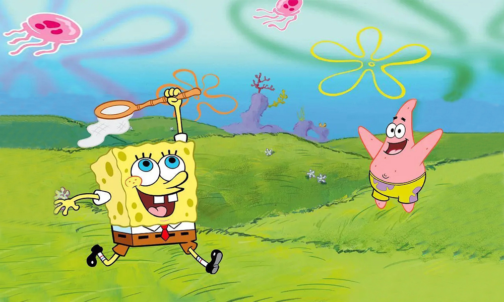

热门影评
《海绵宝宝》是美国电视节目历史上最受孩子们喜爱的动画系列片之一，当这个可爱的海绵方块形象在1999年一推出，就受到小朋友乃至成人观众的疯狂喜爱，曾获全美儿童电视动画片收视冠军，连续八年在美国有线电视网中排名第一，每个月都有将近6千万观众收看，除了儿童观众以外，还有一半观众都是成年人。
《穿方形裤子的海绵鲍勃》是美国电视节目历史上最受孩子们喜爱的动画系列片之一。该片曾获得全美儿童电视动画片收视冠军，每个月都有将近6000万观众收看，除了儿童观众以外，还有一半观众都是成年人。曾连续于2002年～2004年获得艾美奖最佳儿童节目奖，并于2004年获得美国电视评论家奖最佳儿童节目奖。而该片创作者及执行制片人史蒂芬·希伦伯格是尼克儿童频道最受欢迎的创作者之一，曾获2002年格雷斯公主电影基金奖，并获得南加州首个环保公益组织"拯救海滩"的最高荣誉。2004年推出剧场版(《棉球方块历险记》），2006年央视引进国内，中文片名定为“海绵宝宝”。《纽约时报》编辑梅尔曼对它的评价：“这是电视上所曾出现的最有魅力的卡通，它有着干净单纯的快乐，集合了成人的幽默和儿童的纯真。”
很优秀的一部动画片。深深吸引人的便是黑色幽默，和动画片中画面情节把握的相当完美。黑色幽默保证你看的很高兴，尽管没笑，但确实你在里面会发现各种有意思的梗，很过瘾。海绵宝宝式的乐观欢乐在每一集中都有踪迹，像是会在开车时一起编着歌唱（纵然无厘头），会去和派大星抓无聊的水母……惊喜随处可见，我想这才是海绵宝宝独特的生活情趣。总之我想说的是海绵宝宝带给我们太多惊喜和欢乐，奇特的想法故事，支撑起我们的好奇心，看着看着仿佛回到小时候，有时还会给我一种海绵宝宝好深刻的错觉。